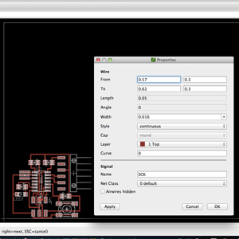
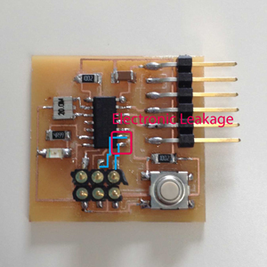
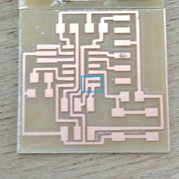
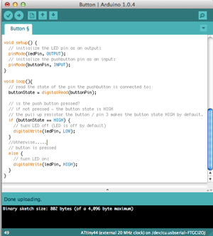
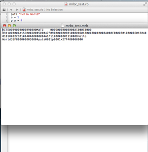

Kousuke Kikuchi
Fab Academy Participant and PhD Candidate
Week 8: Embeded Programming
1. Introduction
Embeded programming is a programming of micro controller for hardware. This week's assignment was making programs for the circuit we have already made as many languages as possible. Hence I tried these Languages:
Arduino
C Language
Ruby(mruby)
However, at uploading a boot file via FabISP, two problems were found.
2. Problems
When I used the FabISP which I made, Arduino could not burn the bootloader of my circuit. The error code was:
avrdude: initialization failed, rc=-1
Double check
connections and try again, or use -F to override this check.
Then I connected the circuit with AVRISP mkII, the signal was green. Indeed, there might not be problem on circuit. Although I also used AVRISP mkII for burning the bootloader via arduino, its attempt was failed. The error of arduino was:
arvdude: stk500v2_command(): command failed
arvdude: stk500v2_program_enable(): bad AVRISPmkII connection status: SCK fail
Double check connections and try again, or use -F to override this check.
Also, when I checked the FabISP based on AVRISP mkII, the signal remained red, even though Mac OS's system profiler can detect it.
To sum up, the problems were
1. There might be a wrong connection in the circuit especially at around SCK (because even AVRISP failed uploading).
2. There might be a something wrong in my FabISP (because AVRISP signaled red)
To solve the problems:
1. I used AVRISP mkII instead of my FabISP. I will verify the FabISP with my collegue.
2. Re-soldering the circuit especially near SCK wire.

After checking my circuit and schematic, I found there was electronic leak between SCK and MISO. But, there is no bridge between both pins. As a result, I thought there was a leak below the Attiny44.

For removal of Attiny44, I used Chipquik SMD Removal Kit. After the removal, I found there remained cupper between both pin.

I forgot to take the picture of it. but this was a board before soldering. As we can see from this picture, electronic leal was due to the connection. After separating both pins, I re-solder an Attiny44.
3. Arduino
ledPin = 7;
buttonPin = 3;

it worked well!
4. C language
I followed an instruction of CrossPack for AVR Development. Since CrossPack for AVR Development was installed at Electronics Production, I commanded.
$ cd /Users/kousukekikuchi/Desktop/hello.blink
$ avr-project hello.blink
Using template: /usr/local/CrossPack-AVR-20130212/etc/templates/TemplateProject
This command could xcodeproject file and c and make file at firmware directory. At hello.blink.c, I programed:
#include <avr/io.h>
#include <util/delay.h>
int main(void)
{
DDRD = 1 << 7; /* make the LED pin an output */
for(;;){
char i;
for(i = 0; i < 10; i++){
_delay_ms(30); /* max is 262.14 ms / F_CPU in MHz */
}
PORTD ^= 1 << 7; /* toggle the LED */
}
return 0; /* never reached */
}
And I modified Makefile by following instruction:
DEVICE = attiny44
CLOCK = 20000000
PROGRAMMER = #-c avrisp2 -P usb
OBJECTS = main.o
FUSES = -U hfuse:w:0xd9:m -U lfuse:w:0x24:m
But at Make, there were errors that DDRD and PORTD were not declered. But I modifed DDRA and PORTA, it could be compiled.
avrdude -p attiny44 -c avrispmkII -e U flash:w:main.hex
But the error was
avrdude: ser_open(): can't open device "unknown": No such file or directory
I guess this error was from "Port" which was not specified at c and make files. So, I changed shell
$ avrdude -p attiny44 -c avrisp2 -P usb -e U flash:w:main.hex
avrdude: AVR device initialized and ready to accept instructions
Reading | ################################################## | 100% 0.00s
avrdude: Device signature = 0x1e9207
avrdude: erasing chip
avrdude: safemode: Fuses OK
avrdude done. Thank you.
This program did not work well. By looking at LED blink example at Hashimoto Shokai, I could find a good example. I modified a main.c file:
#include <avr/io.h>
#include <util/delay.h>
#define sbi(BYTE,BIT) BYTE|=_BV(BIT)
#define cbi(BYTE,BIT) BYTE&=~_BV(BIT)
int main(void)
{
DDRA = _BV(PORTA7);
while (1){
//PORTA ^= _BV(PORTA7);
sbi(PORTA, PA7);
_delay_ms(1000);
cbi(PORTA, PA7);
_delay_ms(1000);
}
}
After compling this file, I uploaded .hex file into the circuit and this circuit blinked well. This file I also tried uploading method without Makefile. Firstly, I compiled hello.ftdi.44.echo.c, and made hex file. Lastly, arvdude could upload this execution file. Here is my script.
$ avr-gcc -mmcu=attiny44 -Wall -Os -DF_CPU=20000000 -I./ -o hello.ftdi.44.echo.out hello.ftdi.44.echo.c
$ avr-objcopy -j .text -O ihex hello.ftdi.44.echo.out hello.ftdi.44.echo.hex
$ avrdude -p attiny44 -P usb -c avrispmkii -e -U flash:w:hello.ftdi.44.echo.hex
avrdude: AVR device initialized and ready to accept instructions
Reading | ################################################## | 100% 0.00s
avrdude: Device signature = 0x1e9207
avrdude: erasing chip
avrdude: reading input file "hello.ftdi.44.echo.hex"
avrdude: input file hello.ftdi.44.echo.hex auto detected as Intel Hex
avrdude: writing flash (826 bytes):
Writing | ################################################## | 100% 0.29s
avrdude: 826 bytes of flash written
avrdude: verifying flash memory against hello.ftdi.44.echo.hex:
avrdude: load data flash data from input file hello.ftdi.44.echo.hex:
avrdude: input file hello.ftdi.44.echo.hex auto detected as Intel Hex
avrdude: input file hello.ftdi.44.echo.hex contains 826 bytes
avrdude: reading on-chip flash data:
Reading | ################################################## | 100% 0.24s
avrdude: verifying ...
avrdude: 826 bytes of flash verified
avrdude: safemode: Fuses OK
avrdude done. Thank you.
But, this hello.ftdi.44.echo.c did not work. Even though I sent a message to the board, it never responded. I do not understand the reason.
5. mruby
mruby is Ruby language for embeded programming. Ruby has been basically used for Web Development due to Ruby on Rails. Since Ruby is the first language I learned, I tried to embedded program based on mruby.
mruby can be attained from Matz's Git, who is the inventor of Ruby. After downloading program, move to the directory, and make.
After make, "bin," "lib" and "include" were engendered. cd bin. I made a test program like this:
puts "Hello World!"
a = 1
p a + 4
"puts" same as System.out.println("Hello World"); in Java and std::cout << "Hello World" << endl; in C++. After type "./mrbc mrbc_test.rb," "mruby_test.mrb" was generated. The code of mrb format file was output Rite binary file.

$ ./mruby -b mrbc_test.mrb
hello world
5
It worked. But I do not understand how to program the Blink LED to the board. This homepage shows a great example of mruby.
6. Applendix
I reconfirmed my FabISP after modifying the short of circuit. It worked properly. But, the problem on the hello.echo.c remained. Even after the upload of hello.ftdi.44.echo.c.hex to the board, it did not respond.
MIT CBA FAB: Compiling and Uploading Microcontroller Programs